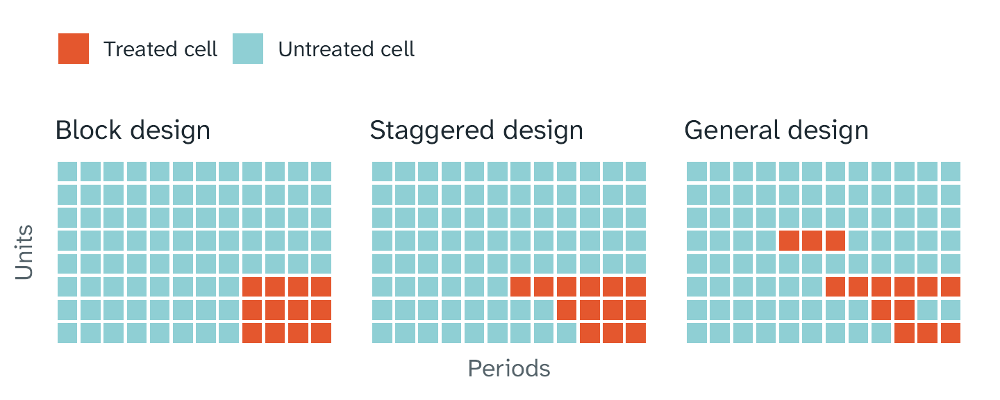
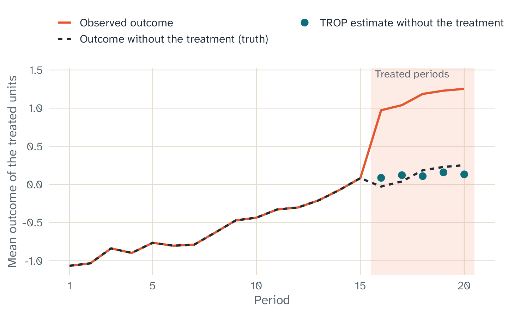

Key points
- TROP estimates the effect of a treatment, for example a new law, from panel data.
- For each treated unit and period, TROP calculates the outcome without the treatment. It uses only the untreated data for this calculation.
- TROP combines three ideas: similar units, near periods, and patterns that all units share. The data select how much each idea counts.
- The authors made TROP to combine methods with different assumptions. In their tests, no single older method was the best in all settings.
The question
Many questions in economics and public policy have the same form. Some units get a treatment at some time, and other units do not. The units can be states, countries, firms, or people. The treatment can be a new law, a new program, or a new price. The question is how the treatment changed an outcome, for example wages or jobs.
To answer this question, researchers use panel data. Panel data has an outcome for many units in many periods. The figure shows panel data as a grid. Each row is a unit, and each column is a period. A cell is one unit in one period.

Three treatment designs. The coral cells are treated cells, and the teal cells are untreated cells.
The figure shows three designs:
- In a block design, all treated units start the treatment in the same period and stay treated.
- In a staggered design, the treated units start in different periods, and they stay treated.
- In a general design, the treatment can also stop.
The outcome we cannot see
To know the effect of a treatment on a treated cell, you must know two outcomes. The first is the outcome with the treatment. The second is the outcome of the same cell without the treatment. The data has only the first outcome. The second outcome is not in the data, because the unit got the treatment.
Thus, each method in this field does the same task. It calculates the outcome without the treatment from the untreated cells. The effect for a treated cell is the difference between the observed outcome and the calculated outcome. The mean of these effects over all treated cells is the average treatment effect on the treated (ATT).

One simulated practice panel with a true effect of 1. A random draw selected the treated units. Practice data has the outcome without the treatment (dashed line). TROP calculates this outcome from the untreated cells (dots). The gap between the solid line and the dots is the estimated effect. The chart shows the idea. It is not evidence about other data.
Three older ideas
Researchers use several methods to calculate the outcome without the treatment. Each method relies on one main idea, and each idea is correct only under an assumption:
- Difference in differences and two-way fixed effects (TWFE) compare changes over time. They assume that, without the treatment, the treated units and the untreated units change in the same way. The name of this assumption is “parallel trends”.
- Synthetic control makes a weighted mix of untreated units. The mix copies the history of the treated units before the treatment. It assumes that a good match in the past gives a good match in the future.
- Factor models and matrix completion assume that hidden patterns over time drive the outcomes of all units. Each unit follows these patterns with its own strength. These methods usually look for a small number of patterns.
It is difficult to test these assumptions with real data. In some data sets, one method works well. In other data sets, the same method gives a large error. Thus, researchers must make a difficult choice. The authors of TROP give this problem as the first reason for their method.
They give two more reasons. First, the older methods use simple weights over time. Difference in differences gives the same weight to all periods. Synthetic control uses one set of unit weights for all treated periods, and it gives the same importance to all earlier periods. Second, synthetic control does not easily work with designs in which units start and stop the treatment.
What TROP does
TROP uses the three ideas together. For each treated cell, it fits a model to the untreated cells. Three parts control this fit:
- Unit weights give more weight to units with a history that is similar to the history of the treated unit. This is the idea of synthetic control.
- Time weights give more weight to periods near the treated period. Recent outcomes often tell more about the present than old outcomes.
- A flexible model has an effect for each unit, an effect for each period, and hidden patterns. A penalty controls the number of hidden patterns in the fit. This model adds a factor model to the model of TWFE.

The weights for one treated cell (coral) of the practice panel. Darker cells get more weight. The top row is the treated unit of this cell. The other rows are in order of similarity to it, with the most similar units at the top. Periods near the treated period also get more weight, before and after it. Treated cells get no weight. For this figure, the tuning parameters are time = 0.3 and unit = 1. In a real analysis, cross-validation selects them.
Each part has a tuning parameter. Cross-validation selects the three values from the data. For the local method, cross-validation hides one untreated cell at a time. It calculates the hidden cell from the other cells and measures the error. Then it selects the values with the smallest total error.
A value can also remove the effect of a part. For example, a time parameter of 0 gives the same weight to all periods. With equal weights and no hidden patterns, TROP gives the same result as TWFE imputation. This method fits an effect for each unit and an effect for each period to the untreated cells. In a staggered design, it can give a different result from the treatment coefficient of a conventional TWFE regression.
What “triply robust” means
An estimate has a bias when it is wrong on average. For the bias result, the paper uses a factor model, in which hidden patterns drive the outcomes. The number of hidden patterns can grow with the size of the data. Under the assumptions of the paper, the authors show that the bias of TROP has an upper limit. This limit is the product of three terms:
- The unit imbalance: how differently the treated units and the weighted untreated units follow the hidden patterns.
- The time imbalance: how differently the treated periods and the weighted untreated periods show the hidden patterns.
- The model bias: the systematic error of the model when it estimates the hidden patterns. This is not random noise.
When one term goes to zero and the other two terms stay limited, the product also goes to zero. Thus, TROP can have a small bias when only one of its three parts works well. This is the meaning of “triply robust”. The authors also show that this limit is smaller than the limits that apply to TWFE, synthetic control, and synthetic difference in differences.
The limits of this result
- The proof is only for a block design. fasttrop also calculates estimates for staggered and general designs, but it gives a warning message.
- The proof uses fixed unit weights and fixed time weights. TROP selects its weights from the data. The result applies to these weights only when their estimation error is small.
- The result is a limit on the bias under the assumptions of the paper. It does not make the bias zero in all data.
- In one of our simulations, the selection of the treated units favored units with large trends. TROP removed half to two thirds of the bias of TWFE imputation, but some bias stayed. The article What TROP can and cannot do gives the details.
What the authors found
The authors compared TROP with five other methods: difference in differences, synthetic control, synthetic difference in differences, matrix completion, and synthetic control with an intercept. The comparison used simulations that copy six data sets that researchers often use. The outcomes in these data sets are wages, unemployment, hours of work, GDP, and cigarette sales. In total, there were 21 settings.
The simulated outcomes followed a model with four hidden patterns. The main comparison had ten treated units and ten treated periods. It measured the root mean square error (RMSE) of the calculated outcomes without the treatment in the treated cells. This is not the error of the ATT.
These were the main results:
- TROP had the lowest RMSE in 20 of the 21 settings. In the other setting, synthetic control had the lowest RMSE, and the RMSE of TROP was 24% higher.
- The RMSE of the other methods changed much from one setting to the next. In one setting, the RMSE of difference in differences was approximately nine times the RMSE of TROP.
- The time weights, alone or together with the model, had the most important part in the lower RMSE. The unit weights helped in some settings, but less.
- With one treated unit and one treated period, TROP was not always the best. In some settings, its RMSE was up to 25% higher than the RMSE of another method.
The advice of the authors
The authors give two recommendations:
- Their preferred approach is to make simulations that copy your own data. Then compare the methods on these simulations, and use the method that works best.
- A simpler approach is to use a more robust method, for example synthetic difference in differences or TROP. In many realistic settings, these methods had much lower errors than TWFE.
Who made what
- The TROP method is from Susan Athey, Guido Imbens, Zhaonan Qu, and Davide Viviano. The paper is “Triply Robust Panel Estimators”, Journal of Applied Econometrics (2026), doi:10.1002/jae.70061.
- fasttrop is an independent R package. The authors of the method did not write it.
- fasttrop follows the equations of arXiv version 3 of the paper.